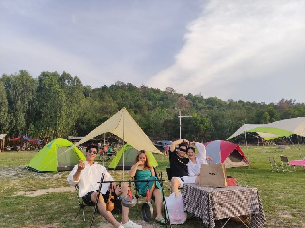

Du lịch hồ Dầu Tiếng: điểm cắm trại nổi tiếng của giới trẻ
Nhân tạo, hoang sơ nhưng đầy thơ mộng, hồ Dầu Tiếng thu hút giới trẻ đến cắm trại tận hưởng để cuối tuần. Tour du lịch hồ Dầu Tiếng chắc chắn sẽ là một gợi ý tuyệt vời cho những ai đang cần chuyến cắm trại ngắn ngày với bạn bè mà vẫn có thể ngắm cảnh đẹp.
1. Hồ Dầu Tiếng ở đâu?
Nổi tiếng là địa điểm cắm trại cực chất của giới trẻ Sài Gòn bởi nó chỉ cách TP. Hồ Chí Minh khoảng 2 giờ đồng hồ đi xe máy. Hồ Dầu Tiếng nằm ở vị trí tiếp giáp giữa ba tỉnh Tây Ninh, Bình Dương, Bình Phước, và có phần lớn diện tích thuộc huyện Dương Minh Châu của tỉnh Tây Ninh.
Hồ Dầu Tiếng là hồ nước nhân tạo lớn nhất Việt Nam và thậm lý là khu vực Đông Nam Á với diện tích mặt hồ lên đến 27 km. Hồ Dầu Tiếng được tạo ra nhằm đẩy nước mặn, trung hòa nước ngọt cho sông Sài Gòn và sông Vàm Cỏ Đông.
Do Hồ Dầu Tiếng trải rộng trên cả 3 tỉnh miền đông nam bộ, nên du khách tha hồ lựa chọn địa điểm phù hợp có view yêu thích để cắm trại.

Tuy là hồ nhân tạo, nhưng hồ Dầu Tiếng vẫn thu hút giới trẻ vùng lân cận, nhất là TP. Hồ Chí Minh. Mọi người thường đến để cắm trại, ngắm khung cảnh thơ mộng của màu nước hồ xanh ngắt, bãi cỏ trải dài bên bờ sông và núi non ốc đảo từ phía xa.
Tất cả tạo nên một khung cảnh thơ mộng, lãng mạn như trong mơ giữa lòng Đông Nam Bộ, tour du lịch hồ Dầu Tiếng thích hợp cho những buổi cắm trại cuối tuần, tụ họp bạn bè của du khách.
Cũng vì nằm ở địa phận của cả 3 tỉnh thành nên hồ Dầu Tiếng khá rộng, có nhiều đường đi hồ Dầu Tiếng và khá phức tạp cho những ai mới đi lần đầu. Để dễ dàng hơn, du khách có thể chọn địa điểm cắm trại là Bãi Đá Trứng (tọa độ 11.353066;106.340520) để dễ dàng tìm đường đi trên Google.
2. Cắm trại, đi tour du lịch Hồ Dầu Tiếng mùa nào đẹp nhất?
Thời tiết miền Nam được chia làm 2 mùa: mùa khô và mùa mưa, hay với vùng sông nước người ta còn gọi là mùa nước cạn và mùa nước nổi.
Để buổi cắm trại của du khách được trọn vẹn, Vietnam Booking khuyến khích du khách nên đi vào mùa nước cạn (mùa khô). Tức là độ khoảng từ tháng 12 hằng năm đến tháng 4 năm sau. Mùa này trời nắng đẹp, thời tiết dễ chịu, không nắng gắt cũng không có mưa. Đặc biệt, những tháng này nước hồ cạn, việc cắm trại hay dã ngoại sẽ dễ dàng hơn.
Bên cạnh đó, du khách thích đi tour du lịch Hồ Dầu Tiếng cũng thường đến đây vào khoảng tháng 6 để tránh cái nóng mùa hè. Mùa này dù nắng sẽ gay gắt hơn, thế nhưng ngược lại không khí xung quanh hồ khá mát mẻ.
Với ánh nắng rực rỡ, du khách sẽ có được những bức ảnh check in hồ Dầu Tiếng ngược nắng xinh lung linh bên mặt hồ nước êm ả xanh thẳm.
Ngoài ra, mùa nước nổi (mùa mưa) từ tháng 7 đến tháng 11 hằng năm khu vực này thường có mưa nhiều, hồ có nước nhiều khiến việc cắm trại tour du lịch Hồ Dầu tiếng có thể không được như ý muốn.
3. Trải nghiệm cắm trại và các hoạt động cực chất với tour du lịch Hồ Dầu Tiếng
3.1 Cắm trại
Đa số du khách đến đây đều để cắm trại cùng hội bạn. Chỉ cần lều, vài chiếc ghế, chiếc bàn nhỏ và đồ ăn tự chuẩn bị là đã có một cuộc vui cuối tuần cực đáng nhớ. Cắm trại ven bờ hồ, du khách sẽ được tận hưởng không gian thiên nhiên hồ nước thơ mộng, phóng tầm mắt nhìn thấy núi Bà Đen ở phía xa.
Không chỉ vậy, khung cảnh ở hồ Dầu Tiếng với ánh mặt trời mỗi buổi bình minh hay hoàng hôn đều cực đẹp và lãng mạn.
Cuối tuần đi tour du lịch hồ Dầu Tiếng cùng với nhóm bạn thân, tận hưởng không khí thiên nhiên yên bình với mặt hồ xanh mát và tĩnh lặng, tạm rời xa phố thị ồn ào thì không gì tuyệt vời hơn.
Du khách đến đây cũng hay cắm trại qua đêm, cùng nhau ngồi trước lều để tâm sự xuyên đêm, cùng với đó là bữa tiệc nướng BBQ cực chill. Và sáng hôm sau chính là khoảng thời gian đẹp nhất để chụp ảnh check in mặt hồ với đường chân trời, núi và mặt trời.
3.2 Chèo thuyền Sup
Bên cạnh cắm trại, ở hồ Dầu Tiếng còn có nhiều hoạt động vui chơi khác. Chèo thuyền Sup được xem là một trong những hoạt động được yêu thích nhất trong tour du lịch hồ Dầu Tiếng sau cắm trại.
Trải nghiệm chèo thuyền đứng giữa hồ rộng mênh mông, dưới chân núi Bà Đen phủ nhẹ một tầng mây là khung cảnh thơ mộng chắc chắn là một cảm giác đặc biệt mà du khách sẽ hiếm khi có được.
Để trải nghiệm môn thể thao dưới nước chèo thuyền Sup, du khách cần phải thuê dụng cụ chèo thuyền bao gồm: ván sup, bơm sup, mái chèo và áo phao.
3.3 Câu cá
Với diện tích 27 km², hồ Dầu Tiếng là nơi quy tụ của nhiều loại cá, ốc, hến. Vậy nên không khó để khách du lịch bội thu được một vài con cá cho món cá nướng hay hến đầy ắp một bàn tay.

Đôi khi chỉ cần ngồi trên bờ, du khách cũng có thể nghe được tiếng cá bơi lội dưới nước. Với tour du lịch hồ Dầu Tiếng ngày cuối tuần, du khách chỉ cần ngồi thư giãn trên chiếc ghế, thả cần câu và tận hưởng khung cảnh yên bình. Tuy hoạt động này cần độ kiên nhẫn cao, nhưng bù lại du khách sẽ thấy cực thú vị với “chiến lợi phẩm” mà du khách thu được.
4. Ăn gì ở hồ Dầu Tiếng?
4.1 Ăn uống khi đi dã ngoại
Như đã đề cập, đa phần mọi người đến hồ Dầu Tiếng đều để cắm trại hoặc dã ngoại. Khu vực cắm trại tại hồ Dầu Tiếng hiện nay vẫn còn hoang sơ, chưa có khu ẩm thực để phục vụ du khách.
Thế nên, khi đi tour du lịch hồ Dầu Tiếng, du khách nên chuẩn bị trước đồ ăn, nước uống theo ý thích. Về phần các dụng cụ như bếp lò, than, củi du khách có thể mua ở các tiệm tạp hóa gần đó.
4.2 Bánh tráng phơi sương
Đã đến hồ Dầu Tiếng (thuộc địa phận tỉnh Tây Ninh) thì không thể không thử bánh tráng phơi sương đặc sản nổi tiếng của tỉnh Tây Ninh. Du khách sẽ được tận hưởng vị bánh tráng với độ dẻo tuyệt vời kết hợp từ bột gạo và phơi đúng độ sương cần thiết.
Ăn kèm với nó là bún tươi, rau sống, tôm luộc hoặc thịt luộc. Bánh tráng phơi sương dần được nhiều người biết đến và đang trở thành xu hướng ăn vặt của giới trẻ.
4.5 Muối Tây Ninh
Ngoài muối tôm, muối ớt, muối Tây Ninh cũng là một loại gia vị nổi tiếng với người Việt Nam. Đây sẽ là loại gia vị ngon nhất khi kết hợp với các loại hoa quả và sẽ là món quà độc đáo sau chuyến du lịch.
5. Lưu ý khi đi du lịch hồ Dầu Tiếng
Khu vực cắm trại hồ Dầu Tiếng hiện tại vẫn còn mang vẻ thiên nhiên hoang sơ, chưa được đầu tư và phát triển nhiều về mặt du lịch.
Do vậy, du khách đi tour du lịch hồ Dầu Tiếng cần tự chuẩn bị đồ cá nhân cũng như đồ đạc cần thiết để cắm trại. Một số gợi ý về đồ mà du khách nên chuẩn bị sẵn:
- Lều, trại: Nếu không phải là người thường xuyên đi cắm trại và cũng không có sẵn lều thì du khách có thể thuê lều tại một số dịch vụ cắm trại hồ Dầu Tiếng khi đi. Chi phí thuê lều trại dao động khoảng 200.000 - 300.000 đồng 1 người. Nếu du khách không muốn ngủ tại lều thì có thể thuê homestay hồ Dầu Tiếng xung quanh.
- Các đồ dùng như: áo mưa, túi ngủ (nếu có kế hoạch cắm trại qua đêm), bếp lửa, bàn xếp, ghế xếp
- Chuẩn bị nước sạch để ăn uống, sinh hoạt, du khách có thể mua bình nước lọc 5 lít.